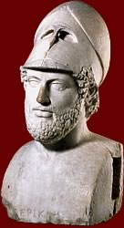

Perikles
c.495 - 429 BC

Perikles was one of the most important people in Athens during the 5th century. He was elected 15 times to the post of strategos (general). He improved the system of democracy in the city. This made it easier for artists and philosophers to work in freedom.
Perikles also planned a major building programme for Athens. The city had been badly damaged during the Persian Wars. The buildings on the Akropolis had been left in ruins for years to remind Athenians of that time.
Perikles wanted to make Athens the most beautiful and impressive city in Greece. His building programme resulted in the construction of the Parthenon, and many other beautiful buildings on the Acropolis.
|